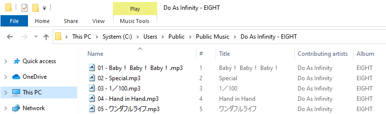
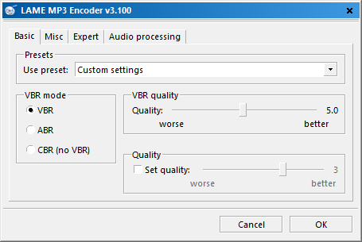
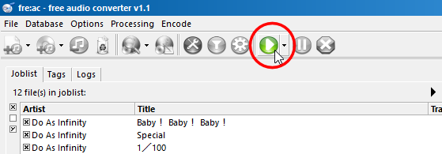
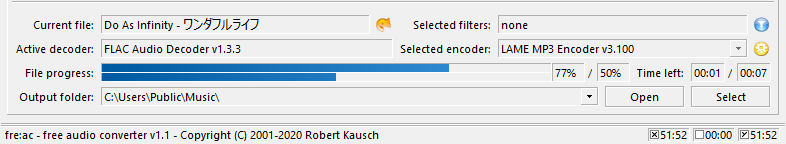

Descargue la última versión de fre:ac desde GitHub o desde la página principal de fre:ac. Instale el programa y ejecútelo. Ponga un CD de audio en su unidad de CD / DVD. Las pistas del CD, por lo general, se mostrarán automáticamente en la ventana principal de fre:ac. Si no, pulse en "Añadir contenido de CD de audio a la lista" para añadir las pistas a la lista de tareas.

Si no desea introducir manualmente los datos de los CDs, puede consultar la base de datos de CDs de freedb en línea para obtenerlos. Para ello sólo tiene que ir a "Base de datos" en el menú y pulsar "Consultar base de datos CDDB". Tendrá una pantalla parecida a ésta:

El programa rellenará automáticamente la información de las pistas:

Una vez hecho esto debemos configurar los parámetros generales del programa. Vaya al menú "Opciones" y seleccione "Configuración general". Se mostrará el siguiente diálogo:

En la primera pantalla puede establecer la configuración del codificador. fre:ac utiliza de forma predeterminada el codificador MP3 LAME, que vamos a utilizar en este tutorial. Asegúrese de que "Codificar 'Al vuelo'" esté marcado. También debe elegir el directorio de salida donde desea guardar los archivos MP3 obtenidos. He establecido mi directorio de música para este fin.
En la ventana 'Patrón de nombre de archivo' puede establecerse cómo se nombrarán los archivos. A mí me gusta tener los míos en directorios con el nombre del artista y el álbum y las pistas, con el número de pista seguido por su título. El patrón de nombre de archivo correspondiente es "<artist> - <album> \ <track> - <title>". Así que, en este caso, obtendrá nombres de archivo como los siguientes:
Para los usuarios más avanzados hay muchas otras opciones que pueden ser modificadas para adaptarse a gustos personales o necesidades.
Ahora debemos configurar el codificador LAME para que tengamos una salida MP3 decente. Vaya al menú "Opciones" y seleccione "Configurar compresor seleccionado".

Usted debe ver una pantalla similar a la que se muestra a continuación.
fre:ac cuenta con diferentes preajustes para el codificador LAME. Todos ellos ofrecen diferentes ajustes para el codificador con cualidades diferentes. Cuanto más alto sea el valor (por ejemplo, "Extreme"), el espacio que ocuparán en su disco duro los archivos MP3 será mayor, pero sonarán mejor. Yo prefiero usar una configuración personalizada y establecer las calidades de forma individual. Puede ver aquí los ajustes realizados. Por ahora, dejar el valor preestablecido es la norma. Pulse 'Aceptar' y ya podemos seleccionar las pistas que desea extraer y codificar.
De vuelta en la pantalla principal se pueden seleccionar las pistas que desea obtener. A la izquierda de cada pista hay una casilla de verificación. Las que tienen × son las marcadas para la compresión. Si quiere extraer todo el CD deje todas marcadas, pero si sólo quiere una pista, desmarque todas menos ésa.
Ya podemos pulsar el botón que iniciará el proceso de compresión.
La parte inferior de la ventana empezará a mostrar una barra de progreso:
Cuando termina una canción, se elimina automáticamente de la lista de tareas (donde se muestran todos los títulos).
¡Enhorabuena! Usted acaba de ripear y comprimir su primer CD con fre:ac!